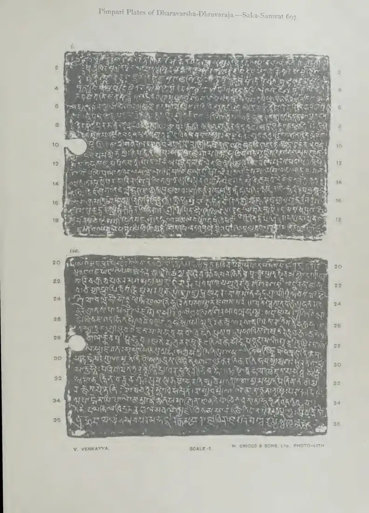
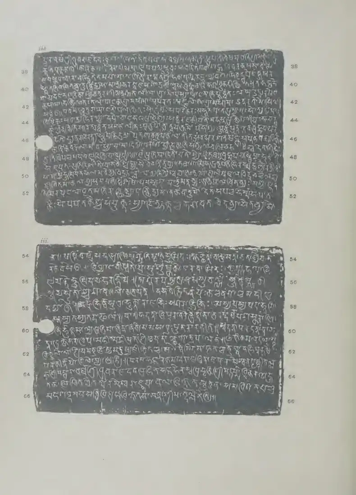

Pīmpari plates of Dhārāvarsha Dhruvarāja
PIMPARI PLATES OF DHARAVARSHA-DHRUVARAJA ;
SAKA-SAMVAT 697.
BY K. B. PATHAK, B.A.; POONA.
This grant consists of three plates, each measuring . The ring on which the seal was strung had been detached from the plates when they came into my possession. The weight of the three plates is 260 tolas, while that of the ring and the seal is 190 tolas. The diameter of the ring is and the length of the seal is 6". On the top of the seal there is, in relief, on a countersunk surface, a figure of the four-armed god Vishnu. The grant belongs to Dasharath Patil and Lala Patil of Pimpari in East Khandesh and was published by Mr. G. K. Chandorkar in a Marāthi magazine named Prabhīta nearly two years ago. I obtained the original plates on loan for taking an impression of them through the kind offices of Mr. G. K. Chandorkar. The plate accompanying this paper has been prepared from impressions received from Mr. Nārāyaṇrāo Tāṭakē of the Archæological Office in Poona.
The grant is written in the Nāgarī characters of the period to which the inscription refers itself. The peculiarities in respect of orthography, which deserve to be noted, are that च is always used in place of अ, as in विन्दु for विन्दु in line 62, and that conjunct consonants immediately following च are sometimes doubled as in आर्त्तर्त्ति in line 6, but not in वर्षत्ति in line 18 and in योर्यिजनाय in line 31. The grant is written in the Sanskṛit language, and, except in the donative passages and the last sentence, the whole is in verse. It may be remarked that all the verses of our inscription are met with in later Rāshṭrakūṭa grants.
The inscription records the grant, by Dhārāvarsha śrī-Dhruvarājadēva, of the village called Lilāgrāma to a Brāhmaṇa named Bhaṭṭadēva, when six hundred and ninety-seven years of the Śaka king had passed away, on the new moon-day, in the dark half of the month of Kārttika, when there was a solar eclipse. The mention of the solar eclipse in the date may be taken as a proof of the genuineness of the present grant. But it comes into conflict with the Dhulia grant of Karkarāja, dated Śaka-Samvat 701, which purports to have been issued in the prosperous reign of Gōvindarāja II.1 I beg to invite attention to the following passage in that grant:—
श्रीप्रभूतवर्षस्य . . . . . प्रवर्धमानराज्ये [*]
तस्यानुजः श्रीध्रुवराजनाम्ना(मा) महानुभावो विहितप्रताप[:*]
1 Above, Vol. VIII. p. 182.
प्रसाधिताशेषनरेन्द्रचक्र[:*] चूडामणि(क्रमेण) वालार्कवपुर्वभूव ।
तस्य सुतः . . . . श्रीकर्कराजस्तदाज्ञया सर्वानेव . . . . समा-
ज्ञापयति
Here the expression तदाज्ञया can only mean “by the command of Dhruvarāja.” How could Karkarāja order all feudatories by the command of Dhruvarāja, in the prosperous reign of Gōvinda II., when Dhruva was not the reigning sovereign? The language used here is ambiguous. The verse quoted above is correctly given in our grant and, with the next following verse (beginning with the words जाते यत्र च), describes Dhruva as the paramount sovereign. The occurrence of the incorrect verse in the Dhulia grant may be cited as an additional proof of its spurious character.1
As the genuineness of the Dhulia plates of Karkarāja is open to question, the first point which we have to decide is whether Gōvinda II. actually succeeded to the throne or whether there was a complete supersession of him by his younger brother Dhruva after the death of Kṛishnarāja I. On this point our grant has the following verse (18) which also occurs in the Kāvi2 and Paiṭhaṇ3 plates:—
येन श्वेतातपत्रप्रहतरविकरव्राततापात्सलीलं
जग्मे नासीरधूलीधवलितशिरसा वल्लभाख्यः सदाजौ ।
स श्रीगोविन्दराजो जितजगदहितसैणवैधव्यहेतु-
स्तस्यासीत्सूनुरेकक्षणरणदलितारातिमत्तेभकुंभः ॥4
Here the possession of the white umbrella, which is symbolical of supreme sovereignty, is attributed to Gōvinda II. Kālidāsa says:—
अथ स विषयव्यावृत्तात्मा यथाविधि सूनवे
नृपतिककुटं दत्त्वा यूने सितातपवारणम् ।
मुनिवनतरुच्छायां देव्या तया सह शिश्रिये
गलितवयसामित्त्वाकूणामिटं हि कुलव्रतम् ॥
Raghuvaiṣa, III. verse 70.
And in a stone tablet inscription at Dāvangere, dated in the Chālukya-Vikramavarsha 48, it is said of the Chālukya king Jayasimha—
अगमदखिऊधात्रो येन राजन्वतीत्वं
निवसति नृपलक्ष्मीर्थ्यस्य शुभ्रातपत्रे ।
सकल[वि]नमितारित्तोणिभृत्त्योक्रिरत्न-
द्वि(द्यु)तिशबलितपादो गण्डरोक्रण्डभूपः ॥
Ep. Carn. Vol. XI. Dāvangere, No. 1.
1 [There are also other proofs of carelessness on the part of the writer of the Dhulia plates. I am, however, not sure if the inscription can be declared spurious on such grounds alone.—Ed.]
2 Ind. Ant., Vol. V. p. 146, verse 18.
3 Above, Vol. III. p. 107, text-lines 27—29.
4 [The verse occurs with some mistakes and alterations in the Dantivarman plates (above, Vol. VI. p. 289, verse 15).—Ed.]
And in the Śravaṇa-Belgoła epitaph of Mallishēṇa we read—
राजन् साहसतुङ्ग सन्ति बहवश्चेतातपत्रा नृपाः
किन्तु त्वत्सदृशा रणे विजयिनस्त्यागोन्नता दुर्ब्रमाः ।
तद्वत्सन्ति बुधा न सन्ति कवयो वादीश्वरा वाग्मिनो
नानाशास्त्रविचारचंचुरधियः कालि कलौ मद्विधाः ॥1
Here श्रेतातपत्रा नृपाः “kings possessed of the white umbrella” means “paramount sovereigns.”
It is thus clear that Gōvinda II. did in all probability reign immediately after the death of his father Krishnarāja I. I lay stress on this point because the genuineness of the Dhulia plates of Karkarāja which refer themselves to the reign of Gōvinda II. may reasonably be called in question, as I have pointed out above. From the Daulatābād grant, which was discovered by me three years ago and brought to the notice of Mr. D. R. Bhandarkar, who has edited it in this Journal,2 it is plain that Dhruva wrested the sceptre from the hands of his elder brother Gōvinda II. That Gōvinda II. did reign is also proved by two pillar inscriptions discovered and noticed by Mr. Rice, which use the expression prithvi-rājyaṁ geyye, “ruling over the earth,” with reference to Jagattuṅga-Prabhūtavarsha-Pratāpāvalōka, son of Akāla[varsha].3
The second question to be decided is the identification of the Śrivallabha, mentioned by Jinasēṇa in the concluding pruṣasti of his Harivaṁsa, which I quoted in my article in the Indian Antiquary, Vol. XV, p. 142. In a note to my paper, Dr. Fleet proposed to identify the king with Gōvinda II. A few years later a different identification was proposed. Dr. Fleet then suggested that in the verse—
शाकेष्वन्दशतेषु सप्तसु दिशं पञ्चोत्तरेषूत्तरां
पातीन्द्रायुधनाम्नि कृष्णनृपजे श्रीवल्लभे दक्षिणां ।
the expression कृष्णनृपजे should be construed with इन्द्रायुधनाम्नि and that श्रीवल्लभ was Gōvinda III.4 The only reason given for this construction was that “Indrāyudhanāman is an adjective and wants the next following word to complete its meaning.” This is not a serious difficulty for Kālidāsa frequently uses रयाङ्गनामन् as a noun.5 And Jinasēṇa himself uses compounds like इन्द्रायुधनामन् as nouns :—
जंबूनामा ततः कृत्तनं पुराणमपि शुश्रुवान् ।
प्रथयिष्यति लोकेस्मिन् सोत्यः केवलिनामिह ॥ 37
ततो नक्षत्रनामा च जयपालो महातपाः ।
पांडुश्च भ्रुवसेनश्च कंप्राचार्य इति क्रमात् ॥ 45
एकादशांगविद्यानां पारगाः स्युर्मुनीश्वराः ।
॥ 46
Ādipurāṇa, Chap. II.
This second identification, though abandoned long ago, is now rendered untenable by the Daulatābād grant of Dhruva, dated Śaka-Samvat 715. A third attempt was made to
1 Above, Vol. III. p. 191, verse 21.
2 Above, Vol. IX. p. 193.
3 Ep. Carn. Vol. XI. Challakere Nos. 33 and 34.
4 Bombay Gazetteer, Vol. I. Part II. p. 395, footnote 1.
5 Kumārasaṅbhava, III, 37; Raghuvaṁsa, III, 24.
identify Jinasēna's Śrivallabha, and this time, with Dhruva. The only ground assigned for this was that “Śrivallabha was a leading and distinctive biruda of Dhruva,” while Gōvinda II. was, in Dr. Fleet's opinion, Vallabha and not “Śrivallabha, which is quite a different thing.”1 But from one of the two inscriptions which we owe to Mr. Rice and to which reference has been made above, we learn that Śrivallabha was a title borne by Gōvinda II., who is spoken of as Jagattuṅga-Prabhūtavarsha-Pratāpāvalōka-Śrivallabha. This is a pillar inscription and a contemporary document and must have been incised between Śaka-Saṅvat 692 and 697.2 It is evident that Śrivallabha was not a distinctive biruda of Dhruva. On this account it is hard to decide whether Jinasēna's Śrivallabha was Gōvinda II. or Dhruva. Though neither of the two reasons put forward by Dr. Fleet, viz. (1) that Gōvinda II. did not reign and (2) that he had not the title of Śrivallabha is correct, his identification of Jinasēna's Śrivallabha with Dhruva is warranted by the subjoined inscription. It is dated in Śaka-Saṅvat 697 and the Daulatābād plates of Dhruva in Śaka-Saṅvat 715. Between these two dates Dhruva was the reigning sovereign. During this interval Jinasēna wrote his praśasti of Śaka-Saṅvat 705. His Śrivallabha, son of king Kṛishṇa was, therefore, Dhruva himself. On the other hand, if the Dhulia plates are also genuine, Jinasēna's Śrivallabha cannot, at present, be identified.
One of the titles of Dhruva is Kalivallabha, which Dr. Fleet always translates “favourite of the Kali age.” It is well known that the Kali age is sinful, and to be called “favourite of the sinful age” can hardly be regarded as complimentary. The real explanation appears to be different. Kali means3 “a brave person, a warrior,” and vallabha means “favourite” or “lord.” And the title should be rendered “the favourite of warriors.” That this is the real meaning of the title is implied in the following verse which occurs in the Maṇṇe grant and in the Sirūr inscription4 :—
लब्धप्रतिष्ठमचिराय कलिं सुदूर-
मुत्सार्य शुद्धचरितैर्धरणीतलस्य ।
क्त्वा पुनः क्तयुगश्रियमप्यशेषं
चित्रं कथं निरुपमो कलिवल्लभोभूत् ॥
TRANSLATION.
“Having quickly driven far away, by his pure actions, the Kali age, which had obtained a footing, and having created again the glory of the Kṛita age on the surface of the earth, it is wonderful how Nirupama became the favourite of the Kali age (the favourite of warriors).”
This verse is an instance of the well-known figure of speech called विरोधाभास (= apparent contradiction). The expression कलिवल्लभ is used in a double sense. The literal rendering “favourite of the Kali age” creates an apparent contradiction, which consists in the Kali age being driven away by its own favourite. But this contradiction is not real and disappears as soon as we remember the secondary and the real sense of the title “the favourite of warriors.”
From his victorious camp pitched near Śaṅkhavivaraka the Paramabhatṭāraka Mahā-rājādhirāja Paramēśvara Prīthivallabha the glorious Dhārāvarsha, the illustrious Dhruva-rājadēva granted, for the increase of the merit and fame in this world and in the next, of his parents and of himself, the village of Līlāgrāma in the Vatanagarikā eighty-four (district). The donee was a Brahmaṇa named Bhatṭadēva, son of Bhatṭāvukadikshita, of the Bharadvāja-
1 Above, Vol. VI. p. 197.
2 [Mr. Rice assigns both of these inscriptions to “about 815 A. D.” One of them mentions the daughter of the Nolamba chief Sinhapōta and the other (his son) Pallavādhirāja. Mr. Krishna Sastri attributes them to Gōvinda III; see above, p. 58 f.—Ed.]
3 कलिस्त्री कलिकार्या ना श्राजिकलहे युगे Mēdinī; कलिर्विभीतके श्रे विवादेन्ययगे युषि Hēmachandra; चित्रप्यचेपि वल्लभः Amara; वल्लभी दयितेऽध्यचे Mēdinī.
4 Above, Vol. VII. p. 205, text lines 2 and 3.
gōtra and the Kāṇva (śākhā) who was a native of Jambūsaraḥ1-sthāna. The boundaries of the village granted are:—on the east Laghuđējrāra-khēṭaka; on the south the village of Talāpāṭaka; on the west the village of Ajjalōṇi; and on the north the river Mosiṇi. The donation was made for keeping up the five great sacrifices (yajña), viz. bali, charu, vaisvadēva, agnihōtra and atithi, and for other purposes. Bhaṭṭa-Hērambaka and others were apparently sent as dūtakas by the king to see to the proper execution of the grant made by him. The writer was the mahāsandhivigrahādhikrita Śrī-Māndalla, son of Balādhikrita. Lilāgrāma and Vaṭanagarikā are identified by Mr. G. K. Chandorkar with Nilagavhāṇa and Vaṇi in the Nāsik District.
TEXT.2
First Plate; Second Side.
1 ॐ3 सवोव्याद्देधसा धाम यन्नाभिकमलं कृतं ॥ इरश्च यस्य कान्तेन्दुकलया कमलंकृतं [॥१*] आसी-
2 द्विषत्तिमिरमुदयतमंडलाग्रो ध्वस्तिनयन्नभिमुखो रणशर्वरीषु भूपः शुचिर्विध-
रिवाप्तदिग-
3 न्तकीर्तिर्गोविन्दराज इति राजसु
भिमुखीं सुभटादृहासा-
4 मुन्नामितं सपदि येन रणेषु नित्यं
खड्गं कुलं च
5 हृदयं च ज्ञिजं च सत्वं ॥[३*]
मनस्तः सममेव यस्य । महाहवे
राजसिङ्क्षः ॥ [२*] दृष्ट्वा चमूम-
। दष्टाधरेण दधता मुकुटिं ललाटे
खड्गं करायान्मुखतश्च शोभा मानो
नाम निशम्य
6 सद्यस्वयं [रि]पूर्णां विगलत्यकाण्डे ॥[8*] तस्यात्मजो जगति विश्रुतदीर्घ-
कीर्तिरात्तर्तिर्हारिहरिविक्रमधाम-
7 धारी । भूपस्तु(स्वि)विष्टप[न्ट]पानुकृतिः कृतज्ञः श्रीकर्कराज इति गोत्रम-
णिर्व्वभूव ॥[५*] तस्य प्रभिन्नकरटच्युतदान-
8 दन्तिदन्तप्रहाररुचिरोल्लिखितांसपीठः क्ष्मापः क्षितौ क्षपितशत्रुरभूतनूजः सद्रा-
ष्ट्रकूटकनका[द्रिरि]वेन्द्ररा-
9 जः ॥[६*] तस्योपार्ज्जितमहसस्तनयश्चतुरुदधिवलयमालिन्याः भोक्ता भुवः शत-
क्रतुसदृशः श्रीदन्तिदुर्गराजो-
10 भूत् ॥[७*] काञ्चीस(श)केरलनराधिपचोलपाण्ड्यश्रोहर्षवज्रटविभेदविधानदक्षं ।
कार्ण्याटकं वलमनं-
11 त्यमजेयमन्यैर्भूत्यैः कियद्भिरपि यः सहसा जिगाय ॥ [८*] अभ्रूविभंगमग्र-
हीतनिशातशस्रमश्रांत-
1 The Kaira grant of Vijayarāja registers a gift “to the general body of officiating priests and religious students of (the village of) Jambūsara, who belong to the Vājasanēya (sect) and the Kāṇva (sūkhā);” Ind. Ant. Vol. VII. p. 250.
From the original plates.
2 Expressed by a symbol.
12 मप्रतिहताज्ञमपेतयत्नं । यो वल्लभं सपदि दण्डवलेन जित्वा राजा-
धिराजपरमेश्वरतामवाप ॥ [२*] आ से-
13 तोर्विपुलोपलावलिलसल्लोलोर्मिमालाजलादा प्रालेयकलङ्कितामलशिलाजालात्तुप्रा-
राच-
14 लात् । आ पूर्वापरवारिराशिपुलिनप्रान्तप्रसिद्धावधेयेनेयं जगतो स्वविक्रमव-
लेनैकातपत्रा(त्री)कृता ॥ [१०*]
15 तस्मिन्दिवं प्रयाते वल्लभराजे क्षतप्रजावाधः श्रीकर्कराजसूनुर्महीपतिः कृष्ण-
राजोभूत् ॥ [११*] यस्य स्वभु-
16 जपराक्रमनिःशेषोत्सादितारिदिक्कक्रं । कृष्ण[स्ये]वाकृष्णं चरितं श्रीकृष्णराजस्य
॥ [१२*] शुभतुंगतुंग-
17 तुरगप्रवृद्धरेणूर्द्धुरुद्धरविकिरणं ग्रीष्मेपि नभो निखिलं प्रावृद्धालायते स्पष्टं
॥ [१३*] [दी]नानाथप्रणयि-
18 षु यथेष्टचेष्टं समोहितमजस्रं । तत्त्वणमकालवर्षो वर्षति सर्वार्तिनिर्वपणं
॥ [१४*] राहप्पमात्मभुज-
19 जातवलावलेपमाजौ विजित्य निशितासिलताप्रहारैः । पालिध्वजावलि[शुभा]म-
चिरेण यो हि
Second Plate ; First Side.
20 राजा[धि]राजपरमेश्वरतां ततान ॥ [१५*] क्रोधादुत्खातखड्गप्रसृतरुचिचयै-
र्भ्रासमानं समंतादाजावृत्तवैरि-
21 प्रकटगजघटाटोपसंक्षोभदक्षं ॥ शौर्यं त्यक्त्वारिवर्गो भयचकितवपुः क्वाप्यदृष्टैव
सद्यो दर्प्याध्मा-
22 तारिचक्रक्षयकरमगमद्यस्य दोर्हण्डरूपं ॥ [१६*] पाता यथतुरंवुराशिरशनालङ्कार-
भाजो भु-
23 वः त्रय्याश्वापि कृतद्विजामरगुरुप्राज्याज्यपूजादरः दाता मानभृदग्रणीर्गुणवतां
योसौ
24 श्रियो वल्लभो भोक्तुं स्वर्गफलानि भूरि तपसां स्थानं जगामामरं ॥ [१७*]
येन श्वेतातपत्रप्रहतरवि-
25 करव्राततापात्सलीलं जग्मे नासीरधूलीधवलितशिरसा वल्लभाख्यः सदाजौ
स श्रीगोविन्दरा-
26 जो जितजगदहितस्त्रैणवैधव्यक्षेतुस्तस्यासीत्सूनुरेकक्षणरणदलितारातिमत्तेभ[कुं]भः ॥
[१८*]
27 तस्यानुजः श्रीध्रुवराजनामा महानुभावोविहतप्रतापः प्रसाधिताशेषनरेन्द्र-
चक्रः क्रमेण
Plate 1 is bound after this page.
Plate 2 is bound after this page.
28 वालाक्रैवपुर्वभूव ॥ [१८*] जाते यत्र च राष्ट्रकूटतिलके सङ्गपचूडामणौ
गुर्वो तुष्टिरथाखि-
29 लस्य जगतः सुखामिनि प्रत्यहं । सत्यं सत्यमिति प्रशासति सति क्षा-
मासमुद्रान्तिकामा-
30 सीडर्मपरे गुणामृतनिधौ सत्यव्रताधिष्ठिते ॥ [२०*] शशधरकरनिकरनिभं
यस्य यशः सुरनगाय-
31 सानुस्थैः परिगीयतेनुरक्तैर्विद्याधरसुन्दरीनिवहैः ॥ [२१*] हृष्टोन्वहं योर्थिज-
नाय सर्वं सर्व-
32 स्वमानन्दितवन्धुवर्गैः प्र[१*]दात्परुष्टो हरति स्म वेगात्पाणान्यमस्यापि
नितांतवी[र्य][.*] [२२*]
33 रक्षता येन निःशेषं चतुरभोधिसंयुतं । राज्यं धर्मेण लोकानां कृता तुष्टिः
परा हृदि ॥ [२३*]
34 अपाङ्गेनापि यो लोकान्यानैक्षत समाश्रिता[न् ।] न ते याचितवंतोन्यभूभृतं धन-
तृष्णया [२४*]
35 तेनेदमनिलविद्युच्चचलमवलोक्य जीवितमसारं । क्षितिदानपर[म]पुण्यः प्रवर्त्तितो
36 ब्रह्मदायोयं ॥ [२५*] स च परमभट्टारकमहाराजाधिराजपरमेश्वरपृथ्वीवङ्गभ-
Second Plate ; Second Side.
37 द्वा(धा)रावर्षश्रीभ्रुवराजदेवः कुशली स[र्वा]नेव यथासंवध्यमानकान्राष्ट्र-
पतिविषयपतिग्रामकूटायु-
38 क्वनियुक्तकाधिकारिक[मह]तरादीन्ममान्नापयत्यस्तु वः संविदितं यथा शङ्खि-
वरकसमावासि-
39 जयस्कंधावारावस्थितेन मया माता[पि]त्रीरात्मनश्चैहिकामुष्मिकपुण्ययशोभिवृद्धये
जंवूसरः-
40 स्थाननिवसितच्चा(चा)तुर्विद्यसामान्यभरद्वाजसगोत्रकाण्वसब्रह्मचारिभट्टावुकदीक्षित-
सुतभट्टदे-
41 वाय वटनगरिकाख्यचतुरशीत्यन्तर्गतलीलाग्रामो यस्याघाटनानि पूर्वतः
लघुडेज्जारखेट-
42 कसीमा । दक्षिणतः तलापाटकग्रामसीमा । अपरतः अज्जलोणिग्रामसीमा
उत्तरतो मोसिणी-
43 सरित् । एवमेतचतुराघाटनोपलक्षितः सोद्रंगः सपरिकरः सभूत[प]ातप्रत्यायः
सोत्य(त्प)द्यमान-
44 विष्टिकः सधान्यहिरण्यादेयोचाटभटप्रावेश्यः सर्व्वराजकीयानामहस्तप्रक्षेपणीयः
आचडा(चंद्रा)-
45 क्रीर्ण्णवक्षितिसरित्यर्व्वतसमकालीनः पुत्रपौत्रान्वयक्रमोपभोग्यः पूर्व्वप्रत्तदेव-
ब्रह्मदायर-
46 हितोभ्यन्तरसिद्धा भूमिच्छिद्रन्यायेन शकन्दपकालातीतसंवत्सरशतषट्रे समन-
वत्यधिके
47 कार्तिकबहुलामावास्यायामादित्योपरागेद्योदकातिसर्गेण वलिचरुवैश्वदेवाग्नि[हो]-
48 त्रातिथिपञ्चमहायज्ञादिक्रियोत्सर्पणार्थं प्रतिपादितो यतोस्योचितया ब्रह्मदाय-
स्थित्या भुंजतो
49 भोजयतः प्रतिदिशतो वा न कैश्चिद्व्यासेधे वर्तितव्यं ॥ तथागामिभद्रनृपतिभि-
रस्मदंश्यैरन्यैर्व्वा
50 सामान्यं भूमिदानफलमवेत्य विद्युल्लोलान्यनित्यैश्वर्याणि तृणाग्रलग्नजल[विं]दुच-
ञ्चलञ्च
51 जीवितमाकलय्य स्वदायनिर्व्विशेषोयमस्मद्दायोनुमन्तव्यः प्रतिपालयितव्यः यश्चा-
ज्ञा[न]-
52 तिमिरपटलावृतमतिराच्छिन्द्यादाच्छिद्यमानकं वानुमीदेत स पञ्चभिर्महापात-
53 कैः सोपपातकैश्च संयुक्तः स्यादित्युक्तञ्च भगवता वेदव्यासेन व्यासे-
Third Plate; First Side.
54 न ॥ षष्टिं वर्ष्षसहस्राणि स्वर्गे तिष्ठति भूमिदः । आच्छेत्ता चानुमन्ता च
तान्येव न-
55 रक्के वसेत् ॥ [२६*] विंध्याटवीष्वतीयासु शुष्ककोटरवासिनः । [क्क]णा-
हयो हि
56 जायन्ते भूमिदायं हरन्ति ये ॥ [२७*] अग्नेरपत्यं प्रथमं सुवर्ण्णं भू[वैं]णावो
57 सू[यं]सुताश्च गावः । लोकत्रयन्तेन भवेद्धि दत्तं यः काञ्चनं गाञ्च महीञ्च
58 दद्यात् ॥ [२८*] वह्विभ्वंसुधा भुक्ता राजभिः सगरादिभिः । यस्य यस्य
यदा भूमि-
59 स्तस्य तस्य तदा फलं ॥ [२९*] यानीह दत्तानि पुरा नरेन्द्रैर्द्दीनानि
धर्म्मार्थयशस्कराणि ।
60 निर्मुक्तमाल्यप्रतिमानि तानि को नाम साधुः पुनराददीत ॥ [३०*]
स्वदत्तां परदत्तां वा य-
61 बादक्ष नराधिप । महीं [म]हीमतां श्रेष्ठ दानाच्छ्रेयोनुपालनं ॥ [३१*]
इति कमलदलाम्बु-
62 विन्दुलोलां श्रियमनुचिंत्य मनुथजोवितञ्च । सर्वमिदमाहृतं च वृध्वा1
न हि पुरुषैः
63 परे(र)कीर्त्तयो विलोप्या [३२*] इति ॥ परमभट्टारकमहाराजाधिराज-
परमेश्वरपृथ्वीवल्ल-
64 भश्रीमद्वारावर्षश्रीध्रुधराजदेवप्रहितभट्टहैरम्वप्रभृतिश्रीमद्वर्माधिकरणदू-
65 तकं । लिखितञ्चैतत्परमेश्वरान्नया वलाधिकृतसूना समधिगतपञ्च-
66 महाशब्दमहासन्धिविग्रहाधिकृतसामन्तश्रीमान्दल्लेनेति ॥
1 The metre is Pushpitāgrā; but the third pāda does not correspond with the first. The verse occurs in the Dantivarman plates with the third pāda thus: श्रतिवि[म]लम[नी]भि[रा]लनीनै; above, Vol. VI. p. 294, verse 51.

